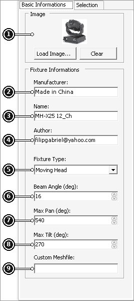

For: Full
The page Basic Informations holds what belongs to the fixture as a whole.

| 1 | Image - the picture of the fixture (Load Image..., Clear). The 3D shows it in its list of the fixtures. |
| 2 | Manufacturer - who makes the fixture. Required: a profile without it is not saved. |
| 3 | Name - the name of the fixture. Required. A habit that helps: the model, then the number of channels (MH-X25 12_Ch), because one fixture often has several DMX modes. |
| 4 | Author - who made the profile. It may stay empty. |
| 5 | Fixture Type - Moving Head, Scanner, Spot or Color Object. The 3D chooses its model from it. |
| 6 | Beam Angle (deg) - how wide the beam opens; the 3D draws the beam with it. |
| 7 | Max Pan (deg) - how far the fixture turns from pan 0 to pan 255 (often 540). |
| 8 | Max Tilt (deg) - the same for tilt (often 270). |
| 9 | Custom Meshfile - a 3D model of its own for this fixture; empty = the 3D's model for the fixture type. |
The values of the manual go in 6 to 8: with them the 3D moves the fixture exactly as the real one moves.
| Picture | How | Size |
|---|---|---|
| of the fixture | Basic Informations > Load Image... | 50 x 50 |
| of a preset | its page: Load Image..., Fill with Color, a standard function, or Gobo... | 32 x 32 |
Load Image... takes any picture file (BMP, PNG, JPG, GIF ...). The picture is made smaller to fit, its proportions kept, on a white background, and stored inside the profile: the profile does not need the file afterwards.
Fill with Color asks for a colour and makes the picture of that colour - the usual picture for the slots of a colour wheel.
A preset of a gobo wheel can name the file of its gobo (High Res. Gobo): the 3D uses it to draw the gobo in the beam. The function Gobo... does everything at once: it takes the picture file as the preset's picture, its file name as the preset's name, and the file as its gobo. The button ... of High Res. Gobo changes only the file.
The profile keeps where the gobo file is: from the folder that holds lib\images when the picture is
in it (for example lib\images\gobo3.png), otherwise from the editor's folder. Keep the gobo pictures in
lib\images of the program folder: then the 3D finds them on any computer.